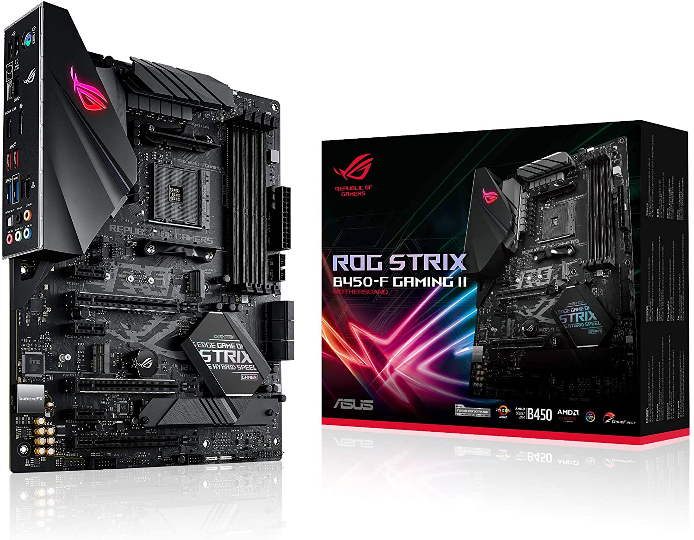
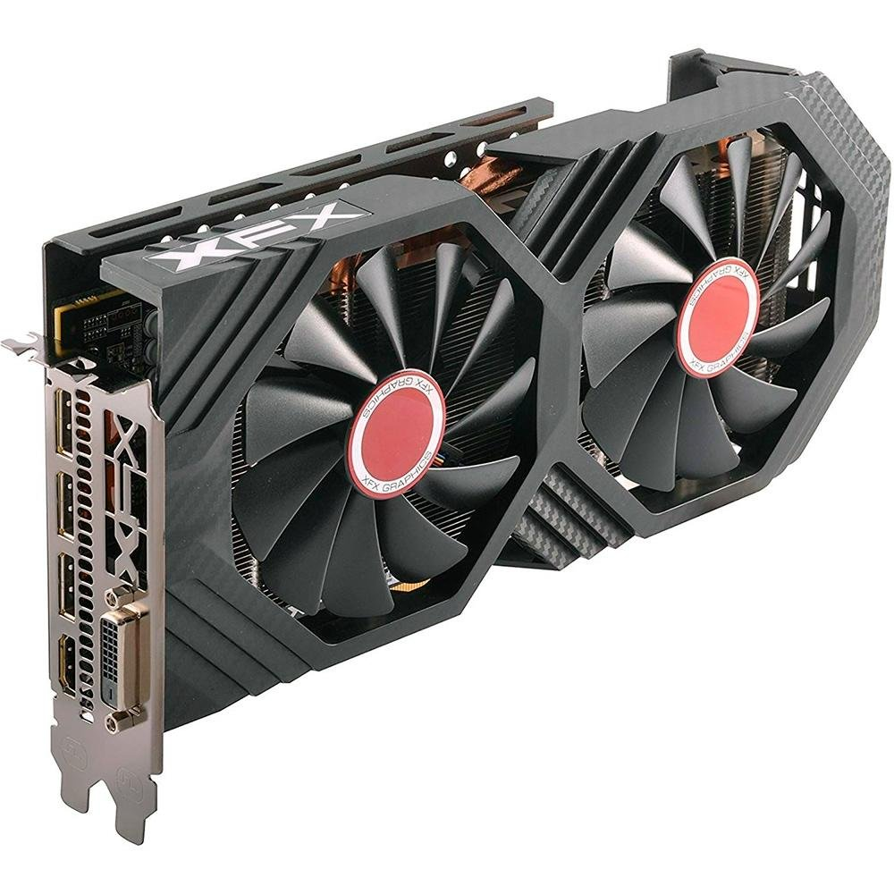
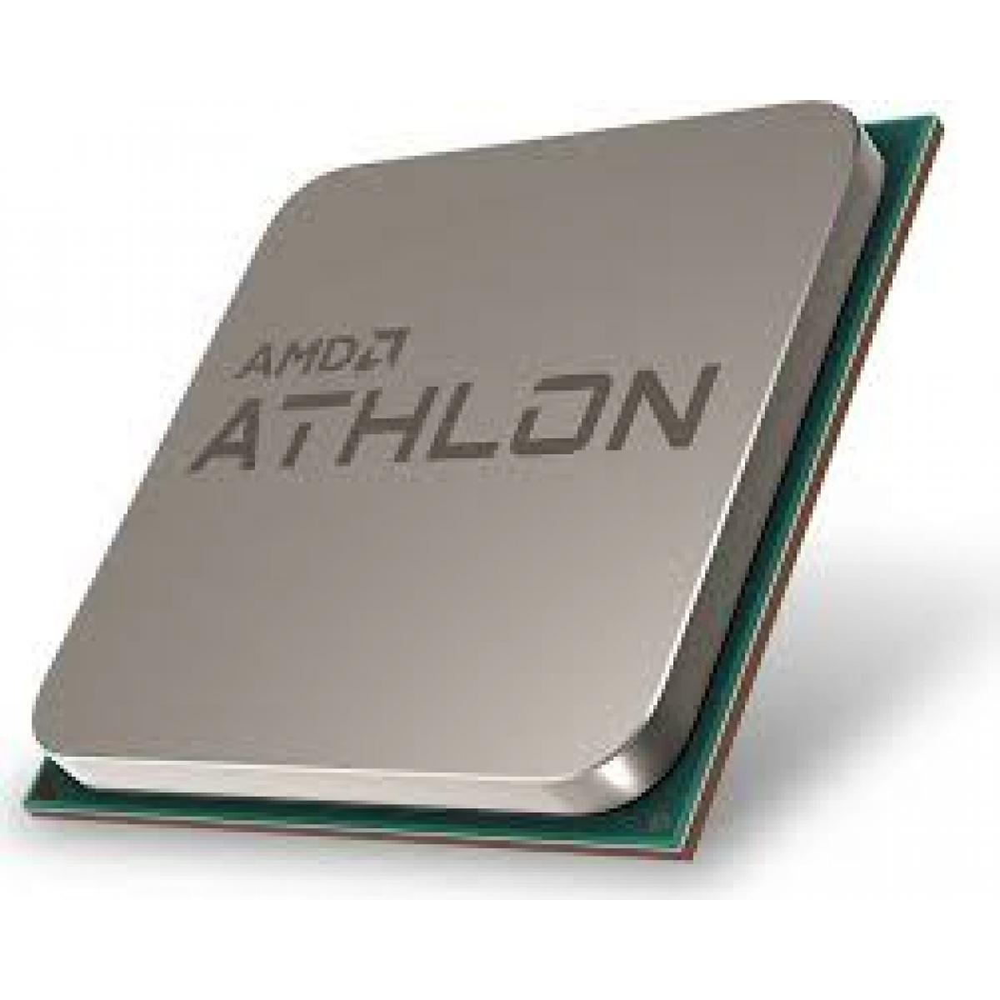
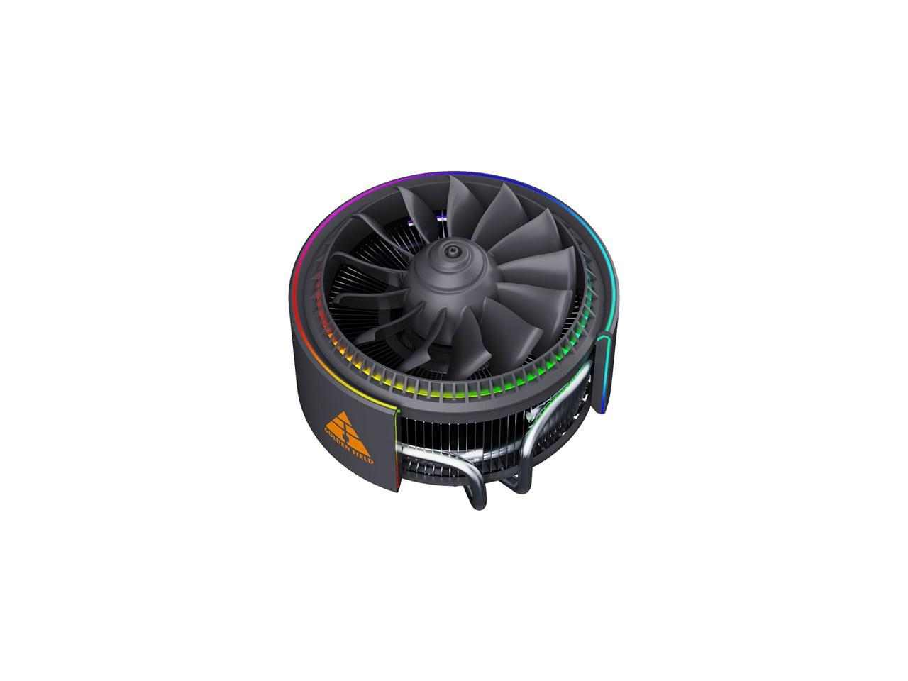
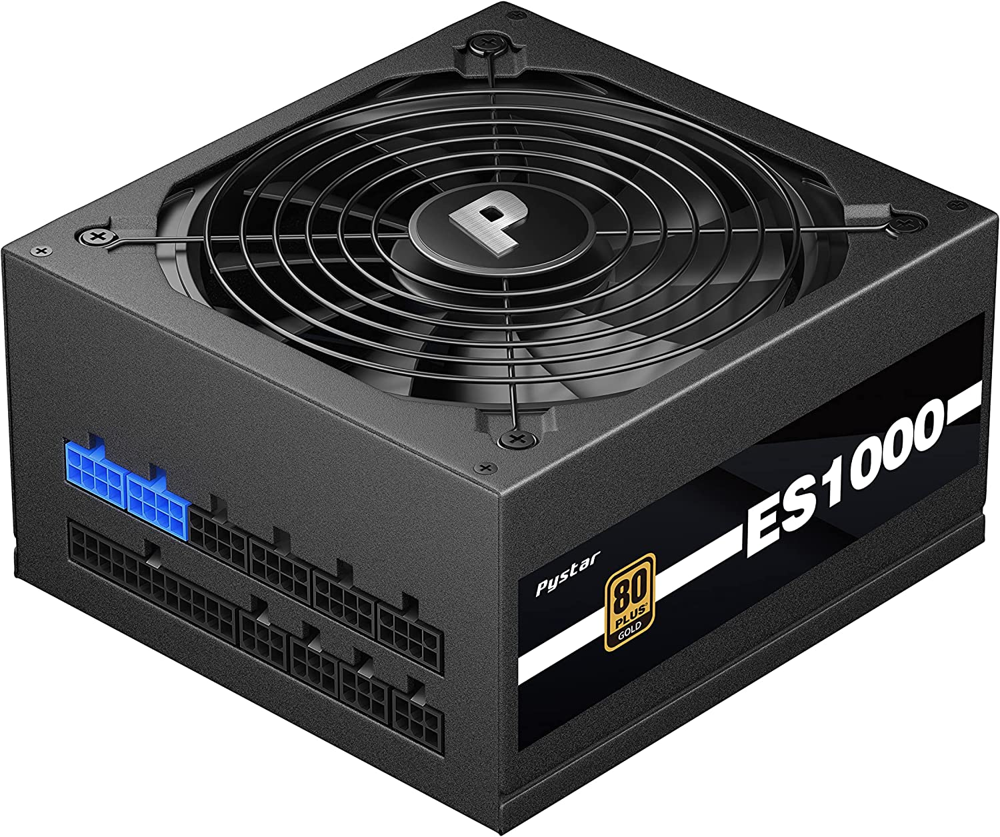
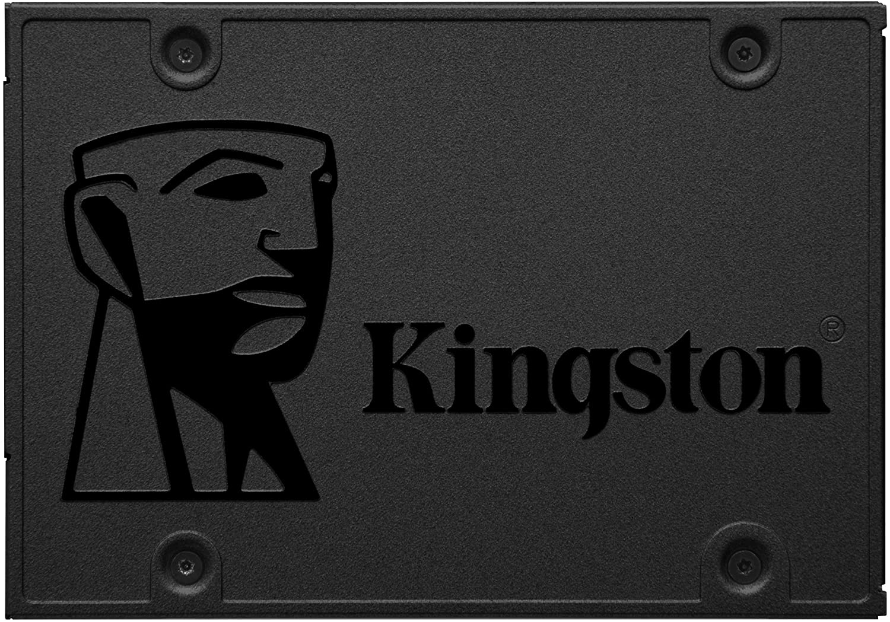
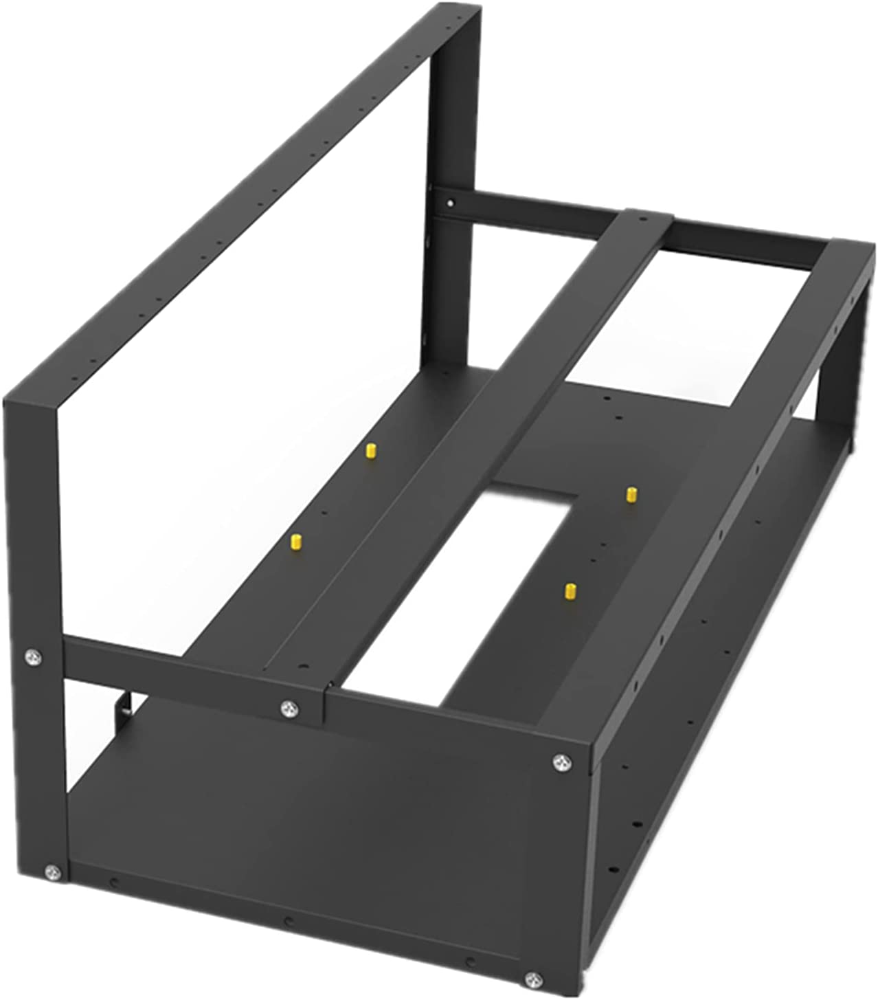

Parts Overview
A miner is basically just like any other computer but with more emphasis on a few of the parts in order for the miner to be effective once
it gets int action. A more specialized version of these miners would be Application-Specific Integrated Circuits (ASIC) which sole purpose
is just to mine a particular coin. A miner that uses GPUs to mine has a wider range of options when it comes to what coins to mine. The trade
of between these GPU miners and ASICs is that ASICs can be far more powerful than GPU mining depending on what hardware you are using.
Below is a brief overview of each of the parts a miner will need in order to function.
Parts List:
- Motherboard
- Graphics Processing Unit
- PCIe Risers
- Central Processing Unit
- Heatsink
- Memory (RAM)
- Power Supply Unit
- HDD/SSD
- Case/Frame
Mining Motherboard
There are motherboards online that are specifically designed around holding large numbers of GPUs, these can normally hold 12+ GPUs. Normally any motherboard that has around 6 to 8 PCIe slots to plug your risers in is good. It is important to know what the supported CPU socket of the motherboard you are using is. If your motherboard has a AM4 socket then you need a AMD CPU compatible for a AM4 socket.
Graphics Processing Unit (GPU)
The quality and quantity of your GPUs will determine the effectiveness and profitability of the miner. As of now a GPU with less than 4 GB of video memory will not be able to mine a good number of the profitable coins. It is important to find a good balance between price and power what what your motherboard is capable of holding and how much power your PSU can push out. The power of a high-end GPU such as the RTX 3090 is almost like having 6 to 8 GTX 1060 6GB GPUs. It is always important to get what ever GPU you are using on sites such as WhatToMine to see what the profitability of that particular GPU is when taking into consideration the current crypto market, electricity costs, etc.
Central Processing Unit (CPU)
For Cryptocurrency mining the CPU is not as important as it use to be. Years ago when Cryptocurrency was a new idea, people would mine with the CPU and some still do today especially for coins such as Monero (XMR). Normally CPU mining is not as effective as other forms of mining and is slowly becoming obsolete as the GPU can do more work than the CPU for this kind of work. For a miner than utilizes GPUs, any CPU that can fit in the socket of the motherboard you are using is good enough and the quality nor performance of the CPU will be a major factor.
Heatsink for CPU
Pretty much every computer has a heatsink for the CPU in order to keep the CPU from over heating. It is a very important part for an operational miner and it is a good idea to have one that will be small enough to not come into contact with other parts of the miner.
Power Supply Unit (PSU)
Without the PSU, how will you power your miner without destroying it? The PSU is responsible for changing the voltage up or down, converting power to direct current, regulate power for smoother outcoming voltage, and more. It is a good idea to have a PSU that can put out 1000 Watts or more if you consider using 6 or more GPUs and want to leave some room for upgrades or extra cards. It would not be a bad idea to calculate the power consumption of all of the parts you are using with some of the power consumption calculators found online such as Outervision.
HDD/SDD
You need a hard drive or an solid state drive to download the operating system required to run the mining software. If the computer is being used primarily for mining and not for things such as gaming, video editing, and downloading large files, then a low capacity storage drive is good enough. It is even possible to create a Windows 10 partition on a flashdrive using Rufus which is a free and open-source portable application for Microsoft Windows that can be used to format and create bootable USB flash drives.
Case/Frame
Anywhere you can place, hold, or hang all of the parts from safely would work really. People use old pet cages, plastic containers from Walmart, and shelves to place everything but a case or frame is usually the norm. A frame would be preferable due to the fact that frames have better airflow than cases and the miner is be cooler and it may perhaps be better in the long run.
